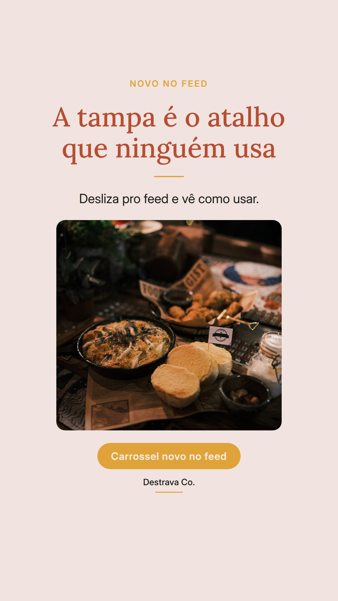
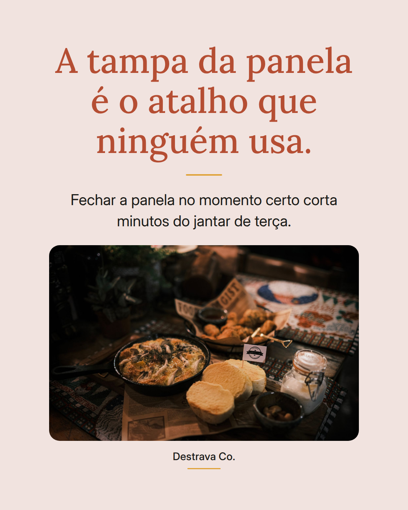
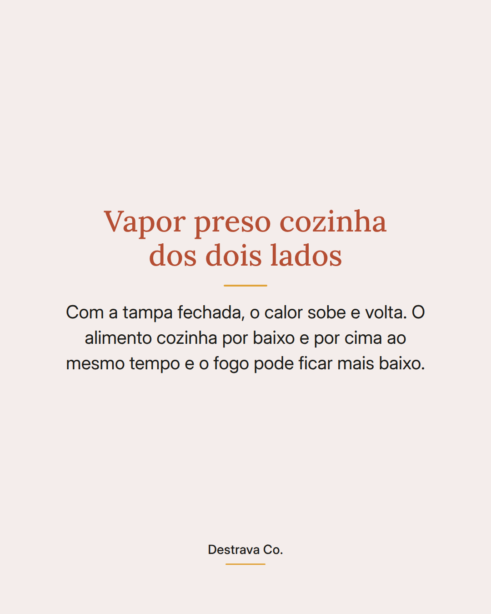
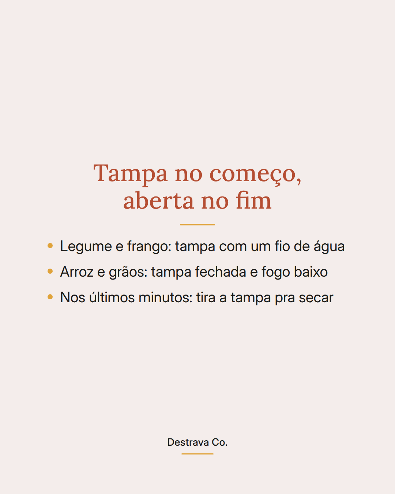
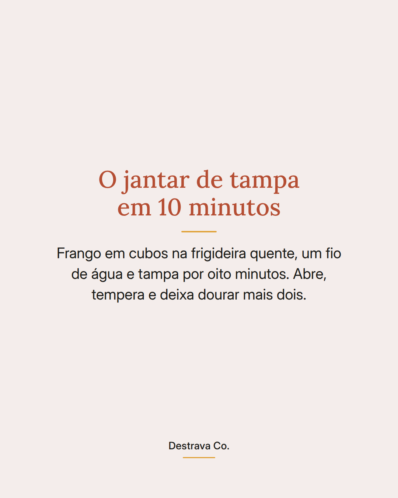
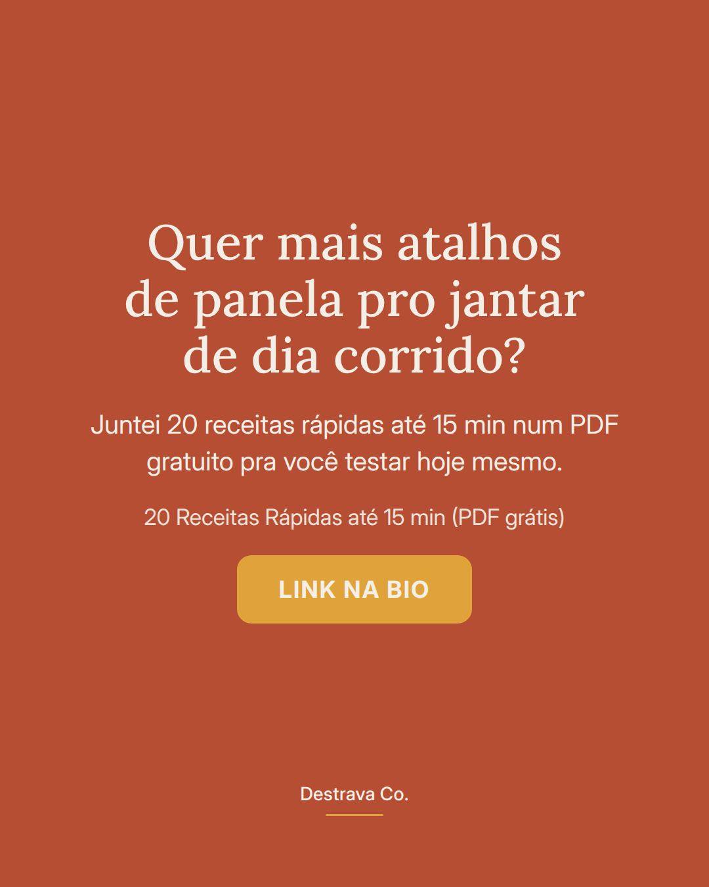

Tampa na panela é o atalho mais barato pra encurtar o jantar.
Cozinha prática é isso: o vapor fica preso, o calor circula por cima e por baixo, e o que levava quinze minutos fica pronto em oito. Dá pra abaixar o fogo e ainda ganhar tempo.
A ordem que funciona aqui em casa: tampa fechada no começo, com um fio de água, pra cozinhar por dentro. Nos últimos minutos, tampa fora, pra secar o líquido e dourar.
Frango em cubos, legume picado, grão cozido: todos aceitam esse mesmo caminho. Você muda o tempero e muda o jantar.
Salva pra testar no próximo dia corrido e manda pra quem vive dizendo que não tem tempo de cozinhar. Se quiser o passo a passo pronto, o PDF gratuito com 20 receitas rápidas até 15 min te espera.